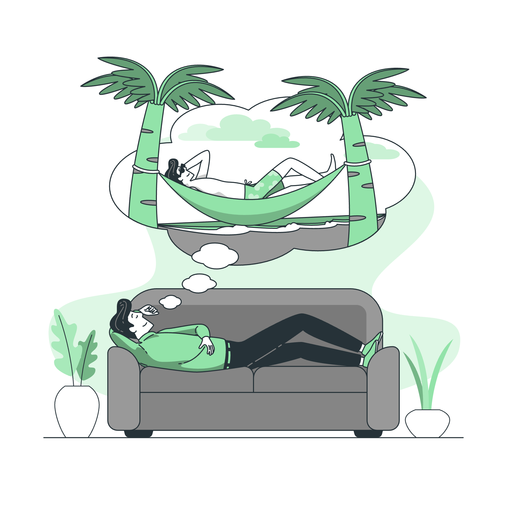

2025-08-19

아침에 눈을 뜨면 가장 먼저 떠오르는 생각이 무엇인가요? "오늘도 회사에 가야 하는구나" "또 같은 일을 반복해야 하는구나" 이런 생각들이 가슴을 무겁게 짓누르고 있지는 않나요? 우리는 왜 이토록 많은 시간을 정말로 원하지 않는 일에 쏟아붓고 있을까요?
안전함의 함정에 빠져있기 때문입니다. 월급이 나오는 회사, 안정적인 직장, 부모님이 인정하는 직업... 이런 것들이 우리를 옭아매고 있습니다. "지금이라도 다행이야"라는 생각으로 하루하루를 견디고 있지만, 정작 우리의 마음은 어딘가로 도망가고 있습니다. 안전함이 곧 행복함이라고 착각하고 있는 것입니다.
타인의 시선이 우리를 옭아매고 있습니다. "사람들이 어떻게 볼까?" "실패하면 어쩌지?" 이런 두려움이 우리를 원하지 않는 길로 밀어붙이고 있습니다. 우리는 자신의 꿈보다 다른 사람들의 기대에 더 많은 가치를 두고 있습니다. 하지만 정작 그 사람들은 우리의 인생을 살아주지 않습니다.
지연된 행동이 가장 큰 적입니다. "내년에 시작하자" "아이가 커지면 시작하자" "은퇴하면 시작하자" 이런 말들로 자신을 속이고 있습니다. 하지만 시간은 우리를 기다려주지 않습니다. 매일매일이 우리의 마지막 날일 수도 있고, 내일은 오지 않을 수도 있습니다.
진짜 문제는 우리가 자신의 진짜 욕망을 잊어버렸다는 것입니다. 어릴 때 꿈꾸던 꿈, 가슴이 뛸 때 느끼던 설렘, 밤새워도 하고 싶었던 일들... 그 모든 것들이 어디로 사라졌나요? 우리는 언제부터 "꿈은 꿈일 뿐"이라고 생각하게 되었나요?
오늘부터 변화를 시작해보세요. 작은 것부터 시작하세요. 하루 30분이라도 당신이 정말로 좋아하는 일을 해보세요. 글쓰기, 그림 그리기, 음악, 요리, 운동... 뭐든 좋습니다. 그 30분이 당신의 하루를 바꿔줄 것입니다.
용기를 가져보세요. 실패해도 괜찮습니다. 늦어도 괜찮습니다. 중요한 것은 시작하는 것입니다. 오늘 당신이 원하지 않는 일에 시간을 낭비하고 있다면, 내일은 조금이라도 당신이 원하는 일을 해보세요.
인생은 너무 짧습니다. 우리는 언제 죽을지 모릅니다. 그런데 왜 우리는 정말로 원하지 않는 일에 우리의 가장 소중한 자산인 시간을 낭비하고 있을까요? 오늘이 당신의 마지막 날이라면, 정말로 이 일을 하고 싶었을까요?
지금 당장 시작하세요. 내일이 아니라 오늘, 다음 주가 아니라 지금, 완벽할 때가 아니라 지금 이 순간부터. 당신의 꿈을 향해 한 걸음 내딛어보세요. 그 한 걸음이 당신의 인생을 바꿔줄 것입니다.
오늘의 실천: 지금 당장 당신이 정말로 하고 싶은 일을 한 가지 적어보세요. 그리고 그 일을 위해 오늘 할 수 있는 작은 행동을 하나라도 해보세요. 그 작은 행동이 당신의 인생을 바꾸는 첫 번째 돌이 될 것입니다.
당신의 인생은 당신의 것입니다. 다른 사람을 위해 살 필요가 없습니다. 당신의 꿈을 위해 살아보세요. 당신의 열정을 위해 살아보세요. 당신의 진짜 모습을 위해 살아보세요. 지금 시작하면 늦지 않습니다.